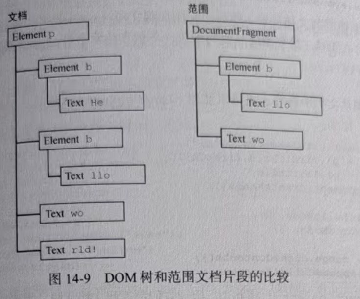

创建范围之后，浏览器会在内部创建一个文档片段节点，用于包含范围选区中的节点。为操作范围的内容 , 选区中的内容必须格式完好 。在前面的例子中 , 因为范围的起点和终点都在文本节点内部 , 并不是完好的 DOM 结构 , 所以无法再DOM 中表示 。不过 , 范围能够确定缺失的开始和结束标签 , 从而可以重构出有效的 DOM 结构 , 以便后续操作 简单来说就是 , 当选区出现 “单个标签” 等不不符合 DOM 格式的时候 , 是无法放进DOM中 , 但是浏览器会帮你补全 , 补全之后就可以放进DOM中了
<p id="p1"><b>Hello</b> world!</p>
而且 , " world!" 文本节点会被拆分成两个文本节点 , 一个包含" wo" , 另外一个"rld!" 最终的DOM树和范围文档片段的比较如图:
这样创建了范围之后 , 就可以使用很多方法来操作范围的内容。(注意, 范围对应文档片段中的所有节点，都是文档中相应节点的指针。)
第一个方法最容易理解和使用:deleteContents()。顾名思义，这个方法会从文档中删除范围包含的节点 。下面是一个例子:
let p1 = document.getElementById('p1'),
helloNode = p1.firstChild.firstChild,
worldNode = p1.lastChild
range = document.createRange()
range.setStart(helloNode, 2)
range.setEnd(worldNode, 3)
range.deleteContents()
Hello world!
执行上面的代码之后 , 页面中的HTML会变成这样
<p><b>He</b>rld!</p>
因为前面介绍的范围选择过程通过修改底层DOM结构保证了结构完好，所以即使删除范围之后 剩下的 DOM结构照样是完好的。
另一个方法 extractcontents()跟deletecontents()类似,也会从文档中移除范围选区。但不同的是 , extractcontents()方法返回范围对应的文档片段。这样 , 就可以把范围选中的内容插人文档中其他地方。来看一个例子:简的来说就是: 将范围内里面的代码提取出来 , 然后可以添加到你想添加的地方
range.setStart(helloNode, 2)
range.setEnd(worldNode, 3)
let fragment = range.extractContents()
p1.parentNode.appendChild(fragment)
这个例子提取了范围的文档片段, 然后把它添加到文档<body>元素的最后。(别忘了 , 在把文档片段传给 appendChild()时 , 只会添加片段的子树 , 不包含片段自身。)结果就会得到如下HTML;
<p><b>He</b>rld!</p>
<b>llo</b> wo
如果不想把范围从文档中移除，也可以使用clonecontents()创建一个副本，然后把这个副本插入到文档其他地方。比如:
let Fragment = range.cloneContents()
p1.parentNode.appendChild(Fragment)
这个方法跟 extractcontents()很相似，因为它们都返回文档片段。 主要区别是cloneContents()返回的文档片段包含范围中节点的副本,而非实际的节点。执行上面操作之后,HTML页面会变成这样:
<p><b>Hello</b> world!</p>
<b>llo</b> wo
此时关键是要知道,为保持结构完好而拆分节点的操作,只有在调用前述方法时才会发生。在DOM被修改之前 , 原始HTML会一直保持不变 确定范围” 是逻辑标记（无 DOM 变动），“操作范围内容” 是实际行为（会触发 DOM 修改，拆分是修改的前置步骤）。